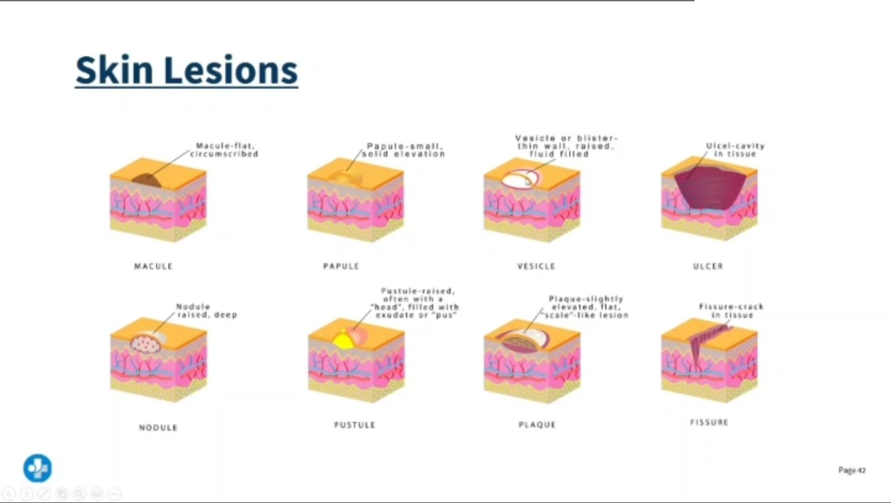

Skin is not wrapping paper — it is the body's largest organ, about 1.5–2 m² of surface and roughly 15% of body weight. Every other page in this set (pressure injuries, wound care, frostbite, dermatitis, psoriasis, skin cancer) is a story about which layer got hurt and how deep it went. Learn this cross-section once and the rest becomes depth, not memorization.
3 layers, top → bottomEpidermis · Dermis · Hypodermis (subcutaneous). Then muscle & bone.
🛡️ SHIELDSensation · Heat control · Immunity · Excretion · Layer (barrier) · D vitamin.
Depth = severityEpidermis only = heals fast. Past the dermis = no skin appendages left to regrow from.
Describe, don't diagnoseChart the lesion morphology — flat? raised? fluid? size? — not "rash".
🧬
THE LAYERS
STEP 1 · STRUCTURE
One drawing to rule the whole set — memorize this cross-section and every later page is just "how deep did the injury go?"

From your lecture. The eight words every skin question is built from. Flat = macule. Raised and solid = papule. Fluid = vesicle. Pus = pustule. Deep and raised = nodule. Crack = fissure.
🔬 Master cross-section — full-thickness skin
epidermisdermisfatarteryveinnerve
🧠 Read it top to bottom like a sandwich: dry crust (epidermis) → the filling with everything living in it (dermis) → butter (fat) → the plate (muscle & bone). Every wound page in this set asks one question: how far into the sandwich did it go?
🧬 Epidermis — the barrier, and it has no blood supply
Avascular. It is fed by diffusion from the dermis below. That is why a shallow scrape oozes clear fluid instead of bleeding, and why the epidermis alone can regenerate perfectly with no scar.
Keratinocytes — 90%+ of the cells. Born at the bottom, pushed up, flatten, die, flake off. Full turnover ~28 days (faster in psoriasis — see NG-225).
Melanocytes — make melanin, which shields DNA from UV. Everyone has about the same number; skin tone reflects how much pigment they make.
Langerhans cells — the immune sentinels. They present antigen; they are the reason allergic contact dermatitis exists (NG-182).
Merkel cells — light touch / discriminative sensation, sitting on the basal layer.
🧠 Strata, deep → surface: Basale · Spinosum · Granulosum · Lucidum · Corneum = "Baby Skin Gets Less Cracked." Lucidum only exists on palms and soles.
🔬 Zoom: the strata, and the 28-day escalator
🧠 The basale is the nursery. If a burn, pressure injury or frostbite kills the basal layer across a whole area, that area cannot re-epithelialise from the surface — it must fill in from the edges or be grafted.
🧬 Dermis — the workshop where everything lives
This is the layer with the blood, nerves, glands and follicles. Injuries that reach it hurt, bleed and can scar.
Papillary dermis (thin, upper) — loose tissue + capillary loops that feed the epidermis; contains Meissner corpuscles.
Reticular dermis (thick, lower) — dense collagen (tensile strength) and elastin (recoil = turgor). Stretch it too fast and you get striae.
Holds the appendages: hair follicles, sebaceous glands, sweat glands — the cells that let partial-thickness wounds re-epithelialise from the middle outward.
Two vascular plexuses: a deep cutaneous plexus and a superficial subpapillary plexus — the body's heat radiator.
🧠 Collagen = rope, elastin = rubber band. Ageing loses the rubber band first — that is why the pinch test tents in older adults even when they are well hydrated.
🧬 Hypodermis — fat, insulation, and the drug depot
Adipose + loose connective tissue. Insulation, shock absorption, energy store, anchors skin to fascia.
Thickness varies enormously by site and body habitus — this is exactly why subcutaneous vs intramuscular injection depth is chosen by site and needle length.
Thin fat over a bony prominence = the classic pressure injury set-up (NG-044).
Poor perfusion here is why the cachectic, the very old and the very cold injure so fast.
🧠 Fat is the body's bubble wrap. Take the bubble wrap away (thin, malnourished, elderly) and every bone becomes a pressure point.
⭐ The appendages — three glands people constantly mix up
Structure
Empties into
Secretes
Where
Clinical hook
Eccrine sweat gland
Its own pore on the skin surface
Watery, salty sweat
Almost everywhere; densest palms, soles, forehead
The real cooling system — evaporation. Lost fluid + Na⁺ + K⁺
Apocrine sweat gland
The hair follicle
Thicker, protein-rich fluid
Axillae, groin, areolae
Odorless until skin bacteria digest it → body odor; activates at puberty
Sebaceous gland
The hair follicle
Oily sebum
Everywhere except palms & soles; densest face, scalp, back
Blocked + inflamed = acne. Keeps the surface supple and slightly acidic
Acid mantle: sebum + sweat keep the surface pH around 4.5–5.5. That acidity plus normal flora is real antimicrobial defense — which is why harsh soap, repeated scrubbing and incontinence-associated moisture all raise infection risk.
🧠 "Apocrine follows the hair, eccrine goes it alone." Sebaceous also drains into the follicle — so two of the three ride the hair.
🛡️
WHAT SKIN DOES
STEP 2 · FUNCTION
Six jobs. When you can name them, you can predict exactly what goes wrong when skin is lost.
🛡️ The six functions, drawn
🧠 SHIELD — Sensation · Heat control · Immunity · Excretion & absorption · Layer (barrier) · D vitamin. Skin is a shield; a shield does six jobs.
🌡️ Thermoregulation — the two settings
Evaporation of sweat is what actually removes heat — sweat sitting on the skin does nothing until it evaporates. Humid air, occlusive dressings and heavy blankets all block it.
🧠 Cold = clamp down. Hot = open up. This one sentence explains pallor in shock, flushing in fever break, and the pale hard skin of frostbite (NG-116).
💥 What is lost when skin is lost
Every complication of a big wound or burn is just a function on this page failing:
Barrier gone → infection, then sepsis.
Water control gone → evaporative fluid loss, hypovolemia, hypothermia.
Protein leaves in exudate → low albumin → more edema → slower healing.
Heat control gone → the patient gets cold fast, especially in the OR or in an open wound.
🧠 Skin failing looks a lot like a leaky, unheated house with the front door open: things get in, heat and water get out.
⚠️ Who has fragile skin — flag these on admission
👵Older adultthin dermis, less fat
🍽️Malnourishedlow protein, low albumin
💧Incontinentmoisture macerates
🩸Poor perfusionPVD, shock, smoking
🍬Diabetesneuropathy + slow healing
💊Steroidsthin, atrophic skin
🛏️Immobilecan't offload pressure
🧠↓ Sensationwon't feel damage
🧠 "Thin, wet, starved, still, and can't feel it." Any two of those together and you should already be planning prevention.
🔎
LESION LANGUAGE
STEP 3 · DESCRIBE IT
"Rash" is not an assessment. These nine words are the vocabulary every derm question is written in.
🔎 PRIMARY lesions — the first thing the skin does
🧠 Sort by three questions in order: Is it raised? Is there fluid? Is it bigger than 1 cm? Flat → macule/patch. Raised & solid → papule/plaque/nodule. Raised & fluid → vesicle/bulla/pustule. Raised & it disappears → wheal.
🔎 SECONDARY lesions — what happens next (scratching, healing, breaking down)
Also learn:lichenification = thickened, leathery skin with exaggerated skin lines from chronic rubbing (the hallmark of long-standing atopic dermatitis — NG-182); atrophy = thin, translucent, "cigarette paper" skin (chronic topical steroids); scar = fibrous replacement tissue; keloid = scar that grows past the original wound edges.
🧠 Erosion vs ulcer = the scar question. Erosion stops at the epidermis and heals invisibly. Ulcer breaches the dermis, so it heals with a scar. Same rule underneath pressure-injury staging.
🚨 The blanching test — the one that separates benign from serious
Press a red area with your finger, then release.
Blanches (turns white, then re-reddens) = blood still inside vessels. Reactive hyperemia, mild erythema, sunburn.
Does NOT blanch = blood has leaked outside the vessels, or tissue is already damaged. Non-blanchable erythema over a bony prominence is a Stage 1 pressure injury (NG-044).
Non-blanching pinpoint red-purple spots = petechiae; larger flat patches = purpura; a big bruise = ecchymosis. Petechiae + fever is an escalate-now finding.
Distribution — localized vs generalized, flexural (eczema) vs extensor (psoriasis), dermatomal (shingles), sun-exposed
🧠 Chart it like a police report: what, how big, what color, where, in what pattern. "Rash to arm" tells the next nurse nothing.
🩺
ASSESS & PROTECT
STEP 4 · TECHNIQUE
Inspection, palpation, and the traps — especially in darker skin and in older adults.
🩺 Three bedside tests, drawn
🧠 Three fingers, three answers: pinch = hydration, press the nail = perfusion, press the redness = tissue damage.
⭐ Assessing color change in darker skin — high-yield and often taught badly
Erythema, cyanosis and jaundice can be genuinely hard to see in deeply pigmented skin. Do not rely on color alone — palpate and compare.
Compare to the surrounding skin and the same site on the other side.
Inflammation may look purple, violet, darker brown or ashen rather than pink or red.
Palpate for the other three signs: warmth or coolness, induration (firmness), boggy/spongy texture, edema, and pain reported by the patient.
Use natural or bright non-fluorescent light; check sclera, conjunctiva, oral mucosa, palms/soles and nail beds for pallor, cyanosis and jaundice.
Stage 1 pressure injuries are under-detected in darker skin — this is a known equity gap, so lower your threshold and document what you palpate, not only what you see.
🧠 "If you can't see it, feel it." Temperature change + induration + pain over a bony prominence is a pressure injury until proven otherwise.
✅ The head-to-toe skin check — order and content
Timing: a full skin assessment on admission (within the first 24 hours per most facility policy), then per policy and every shift for at-risk patients.
Touch — temperature (back of your hand), moisture, texture, turgor, edema (press over a bony area, grade pitting).
Don't skip the hidden places: behind the ears, under breasts and skin folds, between toes, perineum, sacrum, heels, occiput, and under every medical device (tubing, oximeter probe, O₂ tubing, cast edge, cervical collar).
Turn the patient — you cannot assess a sacrum you never looked at.
🧠 "Fold it, lift it, flip it." Pressure injuries hide in folds, under devices and on the side you didn't turn them to.
👵 Ageing skin vs young skin — why the same injury is worse at 85
Flattened dermo-epidermal junction → the layers slide apart with shear; skin tears from tape and transfers.
Less sebum and fewer sweat glands → dry, itchy skin (xerosis) and poorer heat tolerance.
Fewer vessels + slower cell turnover → wounds heal more slowly and infect more easily.
Less fat → bony prominences are barely padded.
Turgor is unreliable as a hydration measure in older adults — use the sternum or forehead, and confirm with mucous membranes, intake/output and daily weights.
🧠 Old skin is tissue paper on a wire frame: use silicone/paper tape, lift-don't-drag, and pad the frame.
📏 Depth language that every later page uses
Superficial / epidermal — epidermis only. Heals from the basal layer, no scar. (Sunburn, erosion, Stage 1.)
Partial thickness — epidermis + part of the dermis. Painful (nerves exposed), moist, heals by re-epithelialising from the surviving hair follicles and glands. (Blister, Stage 2, superficial frostbite.)
Full thickness — through the dermis into fat or deeper. No appendages left, so it must fill in with granulation tissue from the base and edges → scar, contracture, long healing. (Stage 3–4, deep frostbite, deep burns.)
🧠 "Appendages = seeds." If the follicles and glands survive, the wound reseeds itself from the middle. If they are gone, it can only creep in from the edges.
💊 One derm drug that shows up constantly — isotretinoin
A vitamin A derivative used for severe, nodulocystic acne that failed other therapy.
Pregnancy is the absolute priority. It is a potent teratogen. Prescribers and patients enroll in the manufacturer's risk-management program (iPLEDGE in the US): a negative pregnancy test before starting and before refills, and two forms of contraception used together.
Report mood changes or suicidal thoughts immediately — psychiatric monitoring is part of the teaching.
No extra vitamin A supplements (additive toxicity).
Avoid tetracyclines concurrently — the combination is linked to raised intracranial pressure (report severe headache, visual changes, nausea/vomiting).
Expect dry skin, dry eyes and dry lips: lubricating drops, may not tolerate contact lenses, and strict sun protection — the skin burns easily.
Monitor lipids and liver enzymes; avoid alcohol.
🧠 "A" for Acne, "A" for Absolutely no pregnancy. If a question mentions isotretinoin, the answer is almost always about contraception, mood, or sun.
✅ Universal skin protection — good for every patient on every page
Keep it clean and dry — gentle pH-balanced cleanser, pat don't rub, moisturise while skin is still damp.
Manage moisture — treat incontinence promptly, use a barrier cream/film; moisture-associated damage is not a pressure injury but sets one up.
Never massage a reddened bony prominence — it damages already-injured microcirculation.
Reposition and offload, float heels, use lift sheets, minimize head-of-bed elevation to limit shear.
Feed the skin — adequate protein and calories, and fluids unless restricted. Track albumin/prealbumin (typical adult albumin reference band ≈ 3.5–5.0 g/dL; ranges vary by lab) as a nutrition/inflammation marker.
Sun protection — broad-spectrum SPF 30+, reapply every 2 h (NG-204).
🧠 Clean · Dry · Fed · Moved. Four words that prevent most of what the rest of this set treats.
Q2: Why does a shallow abrasion ooze clear fluid rather than bleed?
Because the epidermis is avascular — it has no blood vessels. Serous fluid comes from the dermal capillaries below; you only get frank bleeding once the injury enters the dermis.
Q3: A patient has a 2 cm raised, flat-topped, silvery scaly lesion on the elbow. What is the correct lesion word?
A plaque (raised, flat-topped, greater than 1 cm) with scale. Extensor surface + silvery scale points toward psoriasis.
Q4: Difference between an erosion and an ulcer?
An erosion is loss of epidermis only and heals without a scar. An ulcer extends through the epidermis into the dermis or deeper and heals with a scar.
Q5: Your patient has non-blanchable redness over the sacrum. What is it, and what is the one thing you must not do?
A Stage 1 pressure injury. Do NOT massage the area — massage damages already-compromised microcirculation. Offload the pressure, protect the skin, document, and start prevention.
Q6: Why is skin turgor a poor hydration test in an 85-year-old?
Ageing loses elastin and dermal thickness, so skin tents even when the patient is well hydrated. Test over the sternum or forehead and confirm with mucous membranes, intake/output, and daily weights.
Q7: How do you assess for early inflammation in deeply pigmented skin?
Do not rely on redness. Compare to surrounding skin and the opposite side in good light, look for purple/violet or darker/ashen change, and palpate for temperature change, induration, boggy texture and edema — plus ask about pain.
Q8: What structures make partial-thickness wounds heal faster than full-thickness wounds?
The surviving skin appendages — hair follicles and sweat/sebaceous glands — are lined with epithelial cells that spread out to resurface the wound. Full-thickness wounds have lost them, so they must granulate in from the base and edges and will scar.